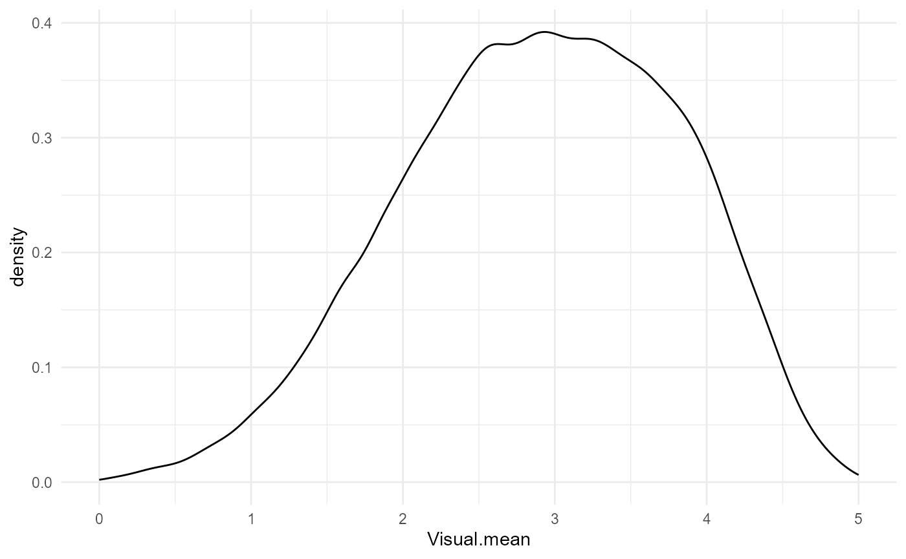
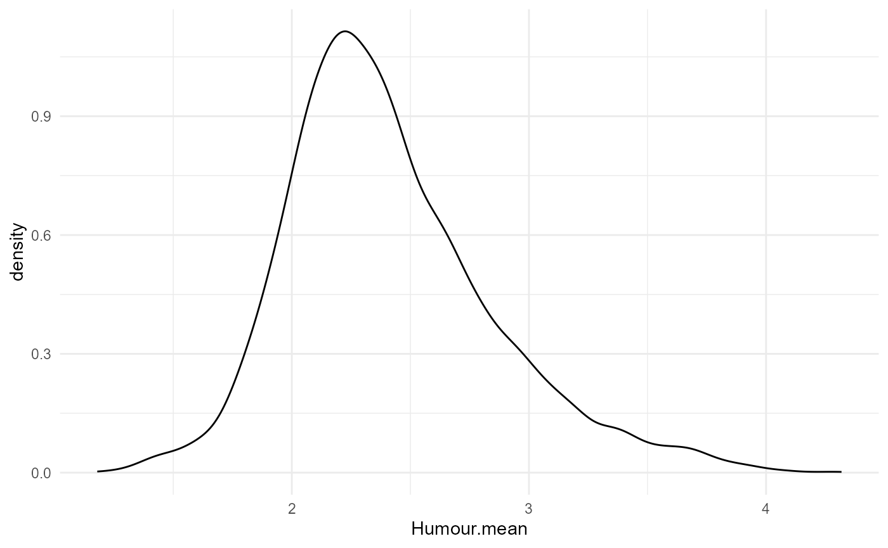
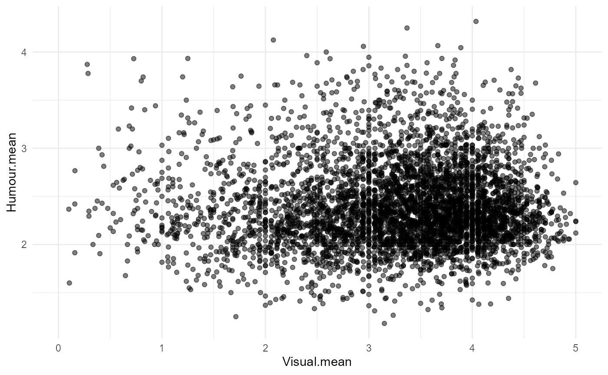
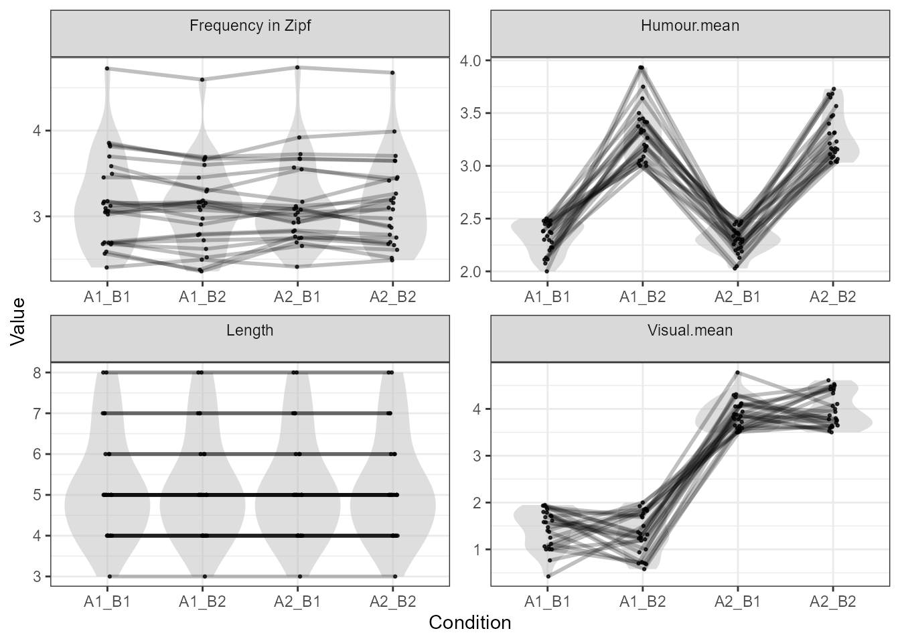

The lexops
dataset is useful but not exhaustive. Thankfully, LexOPS can work
with any suitable list of features. For this example, we will join the
Lancaster Sensorimotor norms to Engelthaler and
Hills’ humour ratings, and the lexops dataset
(LexOPS::lexops). We can then use this to generate stimuli
with a visual rating by humour interaction, controlling for length and
frequency.
The Lancaster Sensorimotor Norms are available from the OSF page.
sensorimotor <- read_csv("https://osf.io/48wsc/download")## Rows: 39707 Columns: 45
## ── Column specification ────────────────────────────────────────────────────────
## Delimiter: ","
## chr (6): Word, Dominant.perceptual, Dominant.action, Dominant.sensorimotor,...
## dbl (39): Auditory.mean, Gustatory.mean, Haptic.mean, Interoceptive.mean, Ol...
##
## ℹ Use `spec()` to retrieve the full column specification for this data.
## ℹ Specify the column types or set `show_col_types = FALSE` to quiet this message.Let’s have a quick peak at the data.
sensorimotor |>
head(5)| Word | Auditory.mean | Gustatory.mean | Haptic.mean | Interoceptive.mean | Olfactory.mean | Visual.mean | Foot_leg.mean | Hand_arm.mean | Head.mean | Mouth.mean | Torso.mean | Auditory.SD | Gustatory.SD | Haptic.SD | Interoceptive.SD | Olfactory.SD | Visual.SD | Foot_leg.SD | Hand_arm.SD | Head.SD | Mouth.SD | Torso.SD | Max_strength.perceptual | Minkowski3.perceptual | Exclusivity.perceptual | Dominant.perceptual | Max_strength.action | Minkowski3.action | Exclusivity.action | Dominant.action | Max_strength.sensorimotor | Minkowski3.sensorimotor | Exclusivity.sensorimotor | Dominant.sensorimotor | N_known.perceptual | List_N.perceptual | Percent_known.perceptual | N_known.action | List_N.action | Percent_known.action | Mean_age.perceptual | Mean_age.action | List#.perceptual | List#.action |
|---|---|---|---|---|---|---|---|---|---|---|---|---|---|---|---|---|---|---|---|---|---|---|---|---|---|---|---|---|---|---|---|---|---|---|---|---|---|---|---|---|---|---|---|---|
| A | 2.214286 | 0.0000000 | 0.4285714 | 0.0000000 | 0.0000000 | 2.428571 | 0.0000000 | 0.3571429 | 1.071429 | 0.3571429 | 0.0000000 | 2.259291 | 0.0000000 | 0.9376145 | 0.0000000 | 0.0000000 | 2.408775 | 0.0000000 | 1.336306 | 2.129077 | 1.3363062 | 0.0000000 | 2.428571 | 2.934085 | 0.4788732 | Visual | 1.071429 | 1.097256 | 0.6000000 | Head | 2.428571 | 2.984370 | 0.3541667 | Visual | 14 | 19 | 0.7368421 | 14 | 21 | 0.6666667 | 36.85714 | 35.57143 | PN_Sample_250.csv | MN_sample_250.csv |
| A CAPPELLA | 4.333333 | 0.0000000 | 0.2222222 | 0.7222222 | 0.0000000 | 1.666667 | 0.3809524 | 0.4285714 | 2.714286 | 3.7142857 | 1.0000000 | 1.608799 | 0.0000000 | 0.5483189 | 1.3636265 | 0.0000000 | 1.909727 | 0.9734573 | 1.075706 | 1.901128 | 1.8477786 | 1.4491377 | 4.333333 | 4.420628 | 0.6240000 | Auditory | 3.714286 | 4.167341 | 0.4046243 | Mouth | 4.333333 | 5.414783 | 0.2854156 | Auditory | 18 | 19 | 0.9473684 | 21 | 21 | 1.0000000 | 35.72222 | 35.14286 | PN_Sample_237.csv | MN_sample_237.csv |
| AARDVARK | 1.625000 | 0.5625000 | 1.6250000 | 0.0625000 | 1.2500000 | 4.125000 | 0.1764706 | 0.7058824 | 2.235294 | 0.0588235 | 0.0588235 | 1.784190 | 1.2632630 | 1.9278658 | 0.2500000 | 1.8797163 | 1.258306 | 0.5285941 | 1.311712 | 1.921244 | 0.2425356 | 0.2425356 | 4.125000 | 4.325018 | 0.4391892 | Visual | 2.235294 | 2.258902 | 0.6727273 | Head | 4.125000 | 4.521367 | 0.3256773 | Visual | 16 | 18 | 0.8888889 | 17 | 20 | 0.8500000 | 36.06250 | 40.82353 | PN_Sample_505.csv | MN_sample_505.csv |
| ABACK | 1.294118 | 0.0588235 | 0.2941176 | 1.3529412 | 0.0000000 | 2.823529 | 0.0000000 | 0.0000000 | 3.272727 | 0.3636364 | 0.1818182 | 1.896204 | 0.2425356 | 0.9851844 | 1.8007351 | 0.0000000 | 2.007340 | 0.0000000 | 0.000000 | 1.902152 | 0.9244163 | 0.6030227 | 2.823529 | 3.006634 | 0.4848485 | Visual | 3.272727 | 3.274410 | 0.8571429 | Head | 3.272727 | 3.963989 | 0.3394343 | Head | 17 | 20 | 0.8500000 | 11 | 19 | 0.5789474 | 43.82353 | 42.54545 | PN_Sample_365.csv | MN_sample_365.csv |
| ABACUS | 1.555556 | 0.1666667 | 3.7222222 | 0.2777778 | 0.1111111 | 3.944444 | 0.0000000 | 2.4736842 | 2.631579 | 0.1052632 | 0.0000000 | 1.616904 | 0.5144958 | 1.4061025 | 0.6691132 | 0.4714045 | 1.304843 | 0.0000000 | 2.269812 | 2.191157 | 0.3153018 | 0.0000000 | 3.944444 | 4.887248 | 0.3920455 | Visual | 2.631579 | 3.219225 | 0.5050505 | Head | 3.944444 | 5.314414 | 0.2631682 | Visual | 18 | 19 | 0.9473684 | 19 | 21 | 0.9047619 | 36.77778 | 34.63158 | PN_Sample_606.csv | MN_sample_606.csv |
The Humour Norms are available from the Github Page.
humour <- read_csv("https://raw.githubusercontent.com/tomasengelthaler/HumorNorms/master/humor_dataset.csv")## Rows: 4997 Columns: 16
## ── Column specification ────────────────────────────────────────────────────────
## Delimiter: ","
## chr (1): word
## dbl (15): mean, sd, n, mean_M, sd_M, n_M, mean_F, sd_F, n_F, mean_young, sd_...
##
## ℹ Use `spec()` to retrieve the full column specification for this data.
## ℹ Specify the column types or set `show_col_types = FALSE` to quiet this message.Let’s have a look at this data too.
humour |>
head(5)| word | mean | sd | n | mean_M | sd_M | n_M | mean_F | sd_F | n_F | mean_young | sd_young | n_young | mean_old | sd_old | n_old |
|---|---|---|---|---|---|---|---|---|---|---|---|---|---|---|---|
| abbey | 2.292683 | 1.1455109 | 41 | 2.176471 | 1.3800043 | 17 | 2.347826 | 0.9820524 | 23 | 2.391304 | 1.1961731 | 23 | 2.166667 | 1.098127 | 18 |
| abode | 2.413793 | 1.1185846 | 29 | 2.100000 | 0.9944289 | 10 | 2.578947 | 1.1697953 | 19 | 2.692308 | 1.1821319 | 13 | 2.187500 | 1.046821 | 16 |
| abscess | 1.593750 | 1.0429293 | 32 | 1.625000 | 1.1877349 | 8 | 1.583333 | 1.0179548 | 24 | 1.555556 | 1.0416176 | 18 | 1.642857 | 1.081818 | 14 |
| absence | 1.640000 | 0.9521905 | 25 | 1.615385 | 0.9607689 | 13 | 1.666667 | 0.9847319 | 12 | 1.571429 | 0.8516306 | 14 | 1.727273 | 1.103713 | 11 |
| abstract | 2.411765 | 1.2819882 | 34 | 1.933333 | 1.0327956 | 15 | 2.789474 | 1.3572418 | 19 | 2.421053 | 1.1212983 | 19 | 2.400000 | 1.502379 | 15 |
Firstly, we’ll rename the Word column to have a
lowercase “w”, so it’s consistent with the sensorimotor norms. Then,
since all the Lancaster norms’ words are in uppercase (whereas the
Humour norms are in lowercase), we’ll then convert the Lancaster norms
words to lowercase.
Next, we will prefix all the features from the humour norms with
“Humour.”, so they will be easily identifiable in the final dataset. We
can use rename_at() and vars(-word) to add
this prefix to all columns except the word column.
Joining the data together is then easy with the dplyr join
functions. Here we use full_join(), joining by the
common column "word". Finally, we join the data to the
lexops in-built dataset, as this contains features we can
use to control for length and frequency. Since the words are stored in
lexops in the string column, we tell
left_join() that these columns should be treated as the
same thing, with c("word"="string").
Before we choose boundaries for our splits, we want to check the distributions of our independent variables.
sens_hum |> ggplot(aes(Visual.mean)) + geom_density()
sens_hum |> ggplot(aes(Humour.mean)) + geom_density()
sens_hum |> ggplot(aes(Visual.mean, Humour.mean)) + geom_point(alpha=0.5)


Finally, we can generate stimuli with our new words. We will create
two levels of Visual ratings: 0:2 (low) and
3.5:5 (high), and two levels of Humour ratings:
2:2.5 (neutral, as consistently low humour ratings are
often tabboo) and 3:5 (high). We’ll control for word length
exactly, and word frequency within a tolerance of
-0.2:0.2.
Since we’re using our own data, we need to use the
set_options() function to tell LexOPS which column contains
our unique identifier, i.e., our words
(id_col = "word").
stim <- sens_hum |>
set_options(id_col = "word") |>
split_by(Visual.mean, 0:2 ~ 3.5:5) |>
split_by(Humour.mean, 2:2.5 ~ 3:5) |>
control_for(Length, 0:0) |>
control_for(Zipf.SUBTLEX_UK, -0.2:0.2) |>
generate(25)## Generated 1/25 (4%). 1 total iterations, 1.00 success rate.Generated 2/25 (8%). 2 total iterations, 1.00 success rate.Generated 4/25 (16%). 16 total iterations, 0.25 success rate.Generated 5/25 (20%). 18 total iterations, 0.28 success rate.Generated 6/25 (24%). 22 total iterations, 0.27 success rate.Generated 8/25 (32%). 25 total iterations, 0.32 success rate.Generated 9/25 (36%). 26 total iterations, 0.35 success rate.Generated 10/25 (40%). 27 total iterations, 0.37 success rate.Generated 11/25 (44%). 28 total iterations, 0.39 success rate.Generated 12/25 (48%). 30 total iterations, 0.40 success rate.Generated 14/25 (56%). 36 total iterations, 0.39 success rate.Generated 15/25 (60%). 37 total iterations, 0.41 success rate.Generated 16/25 (64%). 38 total iterations, 0.42 success rate.Generated 18/25 (72%). 40 total iterations, 0.45 success rate.Generated 19/25 (76%). 41 total iterations, 0.46 success rate.Generated 20/25 (80%). 44 total iterations, 0.45 success rate.Generated 21/25 (84%). 45 total iterations, 0.47 success rate.Generated 22/25 (88%). 46 total iterations, 0.48 success rate.Generated 24/25 (96%). 50 total iterations, 0.48 success rate.Generated 25/25 (100%). 51 total iterations, 0.49 success rate.We can view a quick summary of our stimuli with the
plot_design() function.
plot_design(stim)
Here is the list of stimuli generated for the design of visual sensorimotor ratings (A: A1 low, A2 high) by humour ratings (B: B1 low, B2 high), controlling for word length and frequency.
print(stim)| item_nr | A1_B1 | A1_B2 | A2_B1 | A2_B2 | match_null |
|---|---|---|---|---|---|
| 1 | sternum | stinker | forceps | scrotum | A2_B2 |
| 2 | intrigue | prostate | skylight | sheepdog | A2_B2 |
| 3 | brunt | whiff | havoc | chimp | A2_B1 |
| 4 | query | yodel | specs | husky | A2_B1 |
| 5 | penance | bullion | imprint | charade | A2_B2 |
| 6 | whimper | ragtime | fielder | panties | A1_B1 |
| 7 | angst | oomph | lilac | bulge | A2_B1 |
| 8 | buffer | tingle | skater | pounce | A1_B1 |
| 9 | creed | clunk | leech | putty | A1_B1 |
| 10 | credence | gumption | smuggler | coupling | A2_B2 |
| 11 | colic | bebop | miser | dingo | A1_B1 |
| 12 | calm | joke | moon | shit | A1_B1 |
| 13 | omen | boon | info | mutt | A2_B1 |
| 14 | gust | funk | scab | ogre | A2_B2 |
| 15 | germ | jinx | bead | boob | A1_B2 |
| 16 | creak | nymph | pecan | smirk | A1_B1 |
| 17 | gossip | jingle | rowing | donkey | A1_B1 |
| 18 | anthem | squawk | anchor | cookie | A2_B1 |
| 19 | rap | wit | dam | bra | A1_B2 |
| 20 | mere | tang | lace | zoom | A2_B1 |
| 21 | aura | whim | font | tutu | A1_B2 |
| 22 | sinus | chirp | lapel | gourd | A1_B2 |
| 23 | tempo | fluke | miner | pixie | A2_B2 |
| 24 | gripe | hooky | rotor | girth | A1_B2 |
| 25 | fore | burp | halo | hoof | A1_B2 |
The cite_design() function is useful for suggesting
papers that you should cite having generated your stimuli. Note that for
variables LexOPS does not know, while the variable will be suggested as
something that needs citing, you will have to find the citation
yourself.
cite_design(stim)## Please also cite LexOPS: Taylor, Beith and Sereno (2020), http://doi.org/10.3758/s13428-020-01389-1| var | measure | source | url | |
|---|---|---|---|---|
| Visual.mean | Visual.mean | Custom Measure | Custom Source | Unknown |
| Humour.mean | Humour.mean | Custom Measure | Custom Source | Unknown |
| Length.Length | Length | Length (Number of Characters) | NA | NA |
| Zipf.SUBTLEX_UK.Zipf. | Zipf.SUBTLEX_UK | Frequency in Zipf (Zipf=log10(frequency per million)+3) | Custom Source | https://doi.org/10.1080/17470218.2013.850521 |